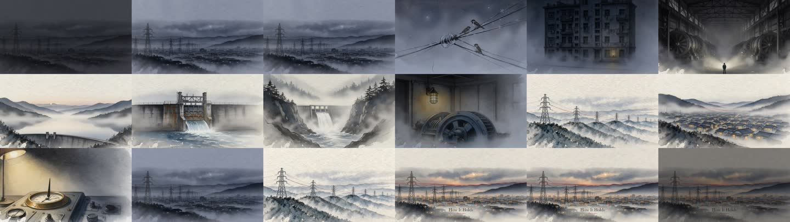

これは EP01（男の子が出てくる9分56秒の版）と同じ題材「ブラックスタート（大停電のあと、電力網をゼロから起こし直すこと）」の冒頭だけを、静かに語り直した88秒の試作です。
How It Holds パイロット「静けさ」— Black Start 88秒
2026-10-11 ／ 共通制作指示書（BRIEF_2026-10-11）にもとづく試作。12カット・ズーム/パンなし・和紙と水彩・赤い一本線。英語ナレーション。
ナレーション台本（英語／日本語訳・時刻は動画の位置）
| [0:02] | Listen. This is a city with the power gone. 耳を澄ませて。ここは、電気が止まった街。 |
| [0:08] | No hum in the wires. 電線のうなりも聞こえない。 |
| [0:11] | No light in the windows. Every machine has forgotten its timing. 窓に明かりもない。どの機械も、自分のリズムを忘れてしまった。 |
| [0:17] | And here is the strange part. A power plant needs electricity to start. In the dark, it cannot wake itself. ここからが不思議なところ。発電所は、動き出すのに電気が要る。暗闇の中では、自分で目を覚ませない。 |
| [0:28] | So the first spark comes from somewhere quieter. High in the mountains, a dam holds back a lake. Water, waiting. だから最初の火花は、もっと静かな場所からやってくる。山の高いところで、ダムが湖をせき止めている。水が、待っている。 |
| [0:39] | Open the gate. ゲートを開ける。 |
| [0:41] | The water falls. 水が落ちる。 |
| [0:43] | The turbine turns. No plug. Just gravity. タービンが回る。コンセントはいらない。重力だけで。 |
| [0:50] | From that one small machine, a single line comes alive, along a path drawn years ago. その小さな機械ひとつから、一本の送電線に電気が通う。何年も前から決めてあった道筋に沿って。 |
| [0:58] | Then, carefully, street by street. Too much at once, and the newborn grid stumbles. それから慎重に、一区画ずつ明かりを戻す。一度にたくさんつなぐと、生まれたばかりの電力網はつまずいてしまう。 |
| [1:06] | Fifty times a second, or sixty. Steady, like a pulse under a thumb. 1秒に50回、あるいは60回（電気の周波数）。親指で感じる脈のように、乱れずに。 |
| [1:13] | A blackout is not only darkness. It is a silence, waiting for its first sound. 停電は、ただの暗闇じゃない。最初の音を待っている、静けさなんだ。 |
| [1:22] | （タイトル「How It Holds」・語りなし） |
時刻は timeline.json の語り出し位置（秒）を切り捨てたもの。英語は Gemini TTS に読ませた台本そのまま（script.json）。
12カット一覧

自己採点（指示書「パイロットで検証する5点」・各10点・辛口）
| 6 | 1. 水彩・和紙の美術品質の統一 和紙の地・霧・墨の線・6色パレットは12カットでそろった。ただし C08 の発電機室と C11 の計器は「デジタル挿絵」寄りで浮く。C01 は暗く濁る。赤い一本線はスマホの大きさだとほとんど見えない。 |
| 6 | 2. 静かな画面での視聴体験 12カット・平均7.3秒・ズーム/パン0・1コマあたりの画面変化は平均1.7（最大17.6）で「止まらず、騒がず」は達成。ただし C06・C07 が2.4〜2.8秒と短く、ここで静けさが途切れる。冒頭7秒がほぼ真っ暗で、画だけでは引き込めていない。 |
| 6 | 3. 音声だけで成立する物語 「Listen. This is a city with the power gone.」で始まり、発電所は自分では起きられない→山のダム→一本の線→脈、の流れは耳だけで追える。文字起こし一致 97.1%（A）。ただし要の一語 “gravity” が “grab it” と聞き取られた（声の発音が弱い）。数字を全部抜いたので「発見」が薄い。 |
| 6 | 4. 映像・音・ナレーションの一体感 両版とも −16.0 LUFS・ピーク −2.2 dB、2秒以上の無音0。語りの頭とカットの頭、「a single line comes alive」と赤い線が灯る瞬間をそろえた。ただし音は聴いて確かめていない（音を鳴らす操作は禁止のため・数値と文字起こしのみ）。B 版は文字起こしに台本に無い一句が入った＝音楽が声に被っている疑い（未確認）。 |
| 7 | 5. AIが継続生産できるコストと工程 外部API 36.23円（上限60円）、絵の作り直し0枚、実作業 約2時間（うち待ち約1時間）。90秒1本 ≒ 31円で量産できる。減点：工場側で2回つまずいた（Claude Code 2.1.278 が Opus 5.5 非対応／同時上限の空き待ち76分）、3時間ルールで仕上げ前に切られ、最後のページ公開は別の担当が引き取った。 |
数字
| 長さ | 88.0秒 ／ 1920×1080 ／ 30fps |
| カット | 12（平均7.3秒・最短2.4秒・最長14.9秒） |
| 語り | 英語118語（Gemini TTS・無料枠） |
| 音量 | A：−16.0 LUFS / LRA 7.6 ／ B：−16.0 LUFS / LRA 6.2 ／ ピーク −2.2 dB |
| お金 | 36.23円（fal：見本 flux-3 ×2［1枚は受信失敗・課金扱い］＋本番 flux-2 flash edit ×11）。家計簿「HowItHolds パイロット静けさ」13行 |
| 元データ | github.com/tamago2022/howitholds/pilot_shizukesa（絵コンテ・画風ブリーフ・語り・採点） |
実測データ（生）
実測: 2026-10-11 ffmpeg（Mac上）
A_ambient: Duration 00:01:28.04 / 1920x1080 30fps / ebur128 I: -16.0 LUFS LRA: 7.6 LU Peak: -2.2 dBFS / silencedetect(-45dB, 2s) = 0
B_music: Duration 00:01:28.04 / 1920x1080 30fps / ebur128 I: -16.0 LUFS LRA: 6.2 LU Peak: -2.2 dBFS / silencedetect(-45dB, 2s) = 0
render_stats.json: {"frames": 1321, "xfade_frames": 231, "reveal_frames": 99, "mean_abs_diff_per_0.13s": 1.681, "max_abs_diff_per_0.13s": 17.63}
stt_mixA_check.json: ref_words 136 / heard 136 / matched 132 / match_pct 97.1（一致 97.1%） / diffs wires→wire, waiting→(なし), falls→fall, gravity→grab it
stt_mixB_check.json: ref_words 136 / heard 142 / matched 131 / match_pct 96.3（一致 96.3%） / diffs 上記＋stumbles→stumbled, 挿入 "the light is a little brighter"
timeline.json カット長(秒): C01 7.52 / C02 3.20 / C03 5.65 / C04 11.07 / C05 10.84 / C06 2.82 / C07 2.43 / C08 5.75 / C09 8.90 / C10 7.69 / C11 7.28 / C12 14.89（計 88.04）
kakeibo.jsonl 案件「HowItHolds パイロット静けさ」: fal flux-3 2行×5.063円 + fal flux-2 flash edit 11行×2.373円 + Gemini TTS 3行×0円 = 36.23円
次に直すこと
- 赤い線を太く・長く（スマホで見える太さに）。C09 以降は線が画面を横切る構図に。
- C08・C11 を見本参照で描き直し、和紙の地を強める。C01 を少し明るく、最初の5秒に「何かが止まっている」小さな手がかり（消えかけの窓1つ等）。
- “gravity” を言い直し（区切って読む・別の声）。B 版は声の帯域だけ音楽を下げる。
- 工場：How It Holds の子は Claude Code 2.1.296 以上で起動する（Opus 5.5 のため）。